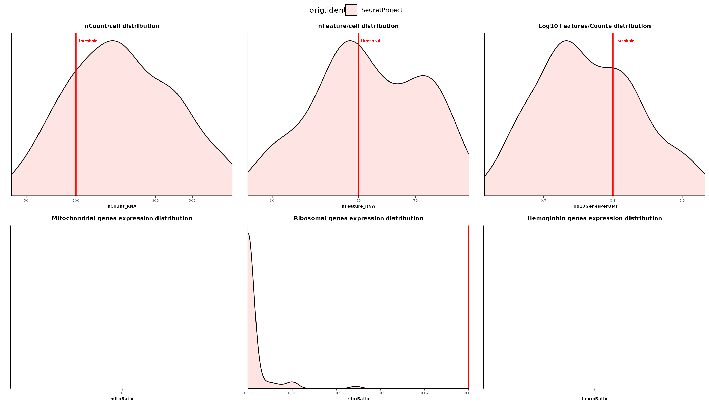
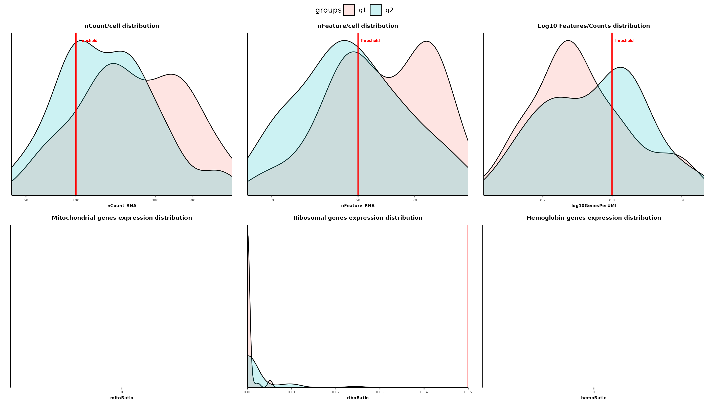
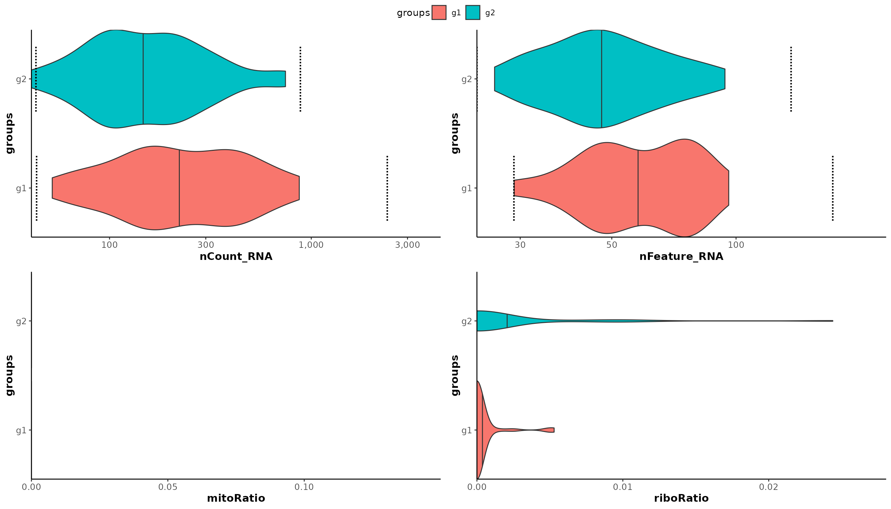
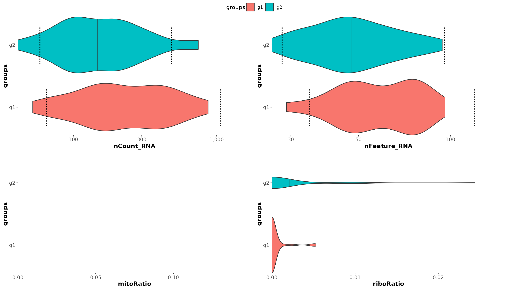
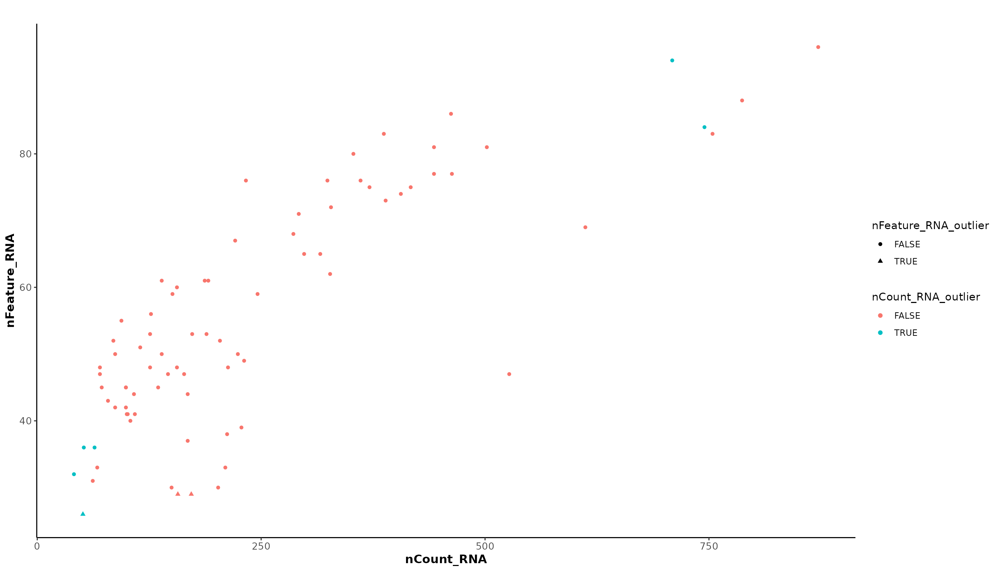
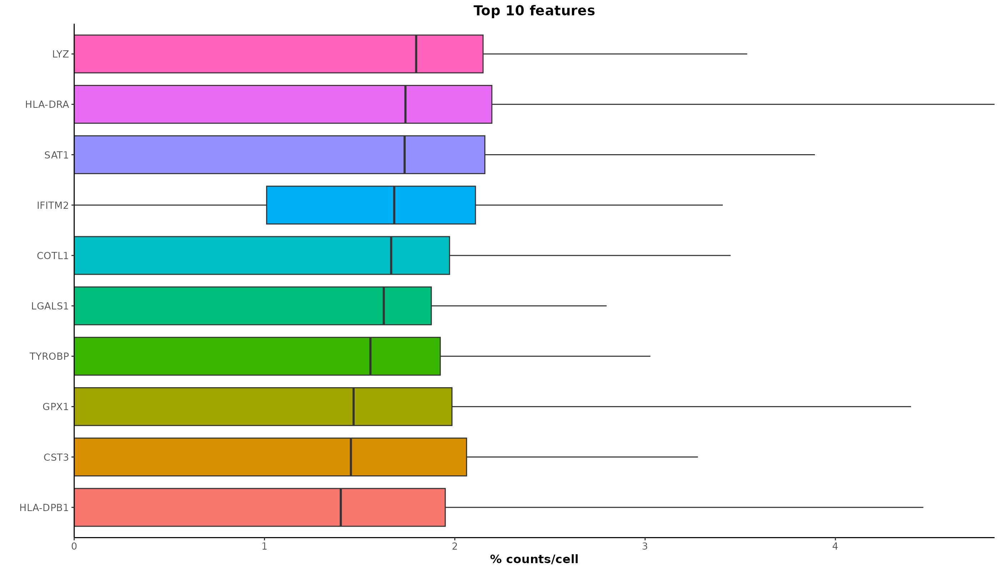

library(schelp)
#> Loading required package: Seurat
#> Loading required package: SeuratObject
#> Loading required package: sp
#> 'SeuratObject' was built under R 4.4.0 but the current version is
#> 4.4.1; it is recomended that you reinstall 'SeuratObject' as the ABI
#> for R may have changed
#>
#> Attaching package: 'SeuratObject'
#> The following objects are masked from 'package:base':
#>
#> intersect, t
pbmc_small <- NULLLoad data
We will use the pbmc_small dataset provided by
SeuratObject.
data("pbmc_small")
pbmc_small
#> An object of class Seurat
#> 230 features across 80 samples within 1 assay
#> Active assay: RNA (230 features, 20 variable features)
#> 3 layers present: counts, data, scale.data
#> 2 dimensional reductions calculated: pca, tsneCalculate qc metrics
The first helper function we will discuss is
calculate_qc_metrics. This function is used to calculate
different QC metrics and insert them into meta.data slot of
the object.
The metrics that it calculates are:
- log10GenesPerUMI
- mitoRatio: ratio of mitochondrial gene expression. The pattern used
to identify genes as mitochondrial can be set through
mitoargument (e.g. for mouse “^Mt-”) - ribooRatio: ratio of ribosomal gene expression. The pattern used to
identify genes as ribosomal can be set through
riboargument (e.g. for mouse “^Rp[sl]”) - hemoRatio: ratio of hemoglobin gene expression. The pattern used to
identify genes as hemoglobin can be set through
riboargument (e.g. for mouse “^Hb[^p]”)
pbmc_small <- calculate_qc_metrics(pbmc_small)
str(pbmc_small@meta.data)
#> 'data.frame': 80 obs. of 11 variables:
#> $ orig.ident : Factor w/ 1 level "SeuratProject": 1 1 1 1 1 1 1 1 1 1 ...
#> $ nCount_RNA : num 70 85 87 127 173 70 64 72 52 100 ...
#> $ nFeature_RNA : int 47 52 50 56 53 48 36 45 36 41 ...
#> $ RNA_snn_res.0.8 : Factor w/ 2 levels "0","1": 1 1 2 1 1 1 1 1 1 1 ...
#> $ letter.idents : Factor w/ 2 levels "A","B": 1 1 2 1 1 1 1 1 1 1 ...
#> $ groups : chr "g2" "g1" "g2" "g2" ...
#> $ RNA_snn_res.1 : Factor w/ 3 levels "0","1","2": 1 1 1 1 1 1 1 1 1 1 ...
#> $ log10GenesPerUMI: num 0.906 0.889 0.876 0.831 0.77 ...
#> $ mitoRatio : num 0 0 0 0 0 0 0 0 0 0 ...
#> $ riboRatio : num 0 0 0 0 0 0 0 0 0 0 ...
#> $ hemoRatio : num 0 0 0 0 0 0 0 0 0 0 ...Plot QC metrics
Once calculated, we can visualize the distribution of these metrics
through the function plot_qc_metrics.
qc_plots <- plot_qc_metrics(pbmc_small,
feature_thresh = 50,
count_thresh = 100,
mito_thresh = NULL)
print(qc_plots)
We can also split the data into different groups (e.g. samples,
batch, etc.) passing the fill argument to a meta.data
column:
qc_plots <- plot_qc_metrics(pbmc_small,
feature_thresh = 50,
count_thresh = 100,
fill = "groups",
mito_thresh = NULL)
print(qc_plots)
Threshold vertical lines can be set with the following arguments:
- count_thresh
- feature_thresh
- log10GenesPerUMI_thresh
- mito_thresh
- ribo_thresh
- hemo_thresh
And disabled setting them as NULL.
NOTE: This function is a wrapper around
qc_density_plot(). Check it out, as it can be also useful to plot othermeta-datarather than qc metrics.
MAD outliers
In modern SC design, multiple samples from different sources/design/modalities are analyzed together. For this reason, the MAD (Median Absolute Deviation) approach to calculate QC threshold is taking space in the field.
With schelp, there are a couple of helper functions to
calculate and visualize MAD thresholds for the different metrics. The
first function is calculate_qc_mad_outliers(), which
calculates MAD thresholds for the previously-calculated metrics, and
creates an “_outlier” for each of them.
pbmc_small <- calculate_qc_mad_outliers(pbmc_small, batch = "groups")
str(pbmc_small@meta.data)
#> 'data.frame': 80 obs. of 15 variables:
#> $ orig.ident : Factor w/ 1 level "SeuratProject": 1 1 1 1 1 1 1 1 1 1 ...
#> $ nCount_RNA : num 70 85 87 127 173 70 64 72 52 100 ...
#> $ nFeature_RNA : int 47 52 50 56 53 48 36 45 36 41 ...
#> $ RNA_snn_res.0.8 : Factor w/ 2 levels "0","1": 1 1 2 1 1 1 1 1 1 1 ...
#> $ letter.idents : Factor w/ 2 levels "A","B": 1 1 2 1 1 1 1 1 1 1 ...
#> $ groups : chr "g2" "g1" "g2" "g2" ...
#> $ RNA_snn_res.1 : Factor w/ 3 levels "0","1","2": 1 1 1 1 1 1 1 1 1 1 ...
#> $ log10GenesPerUMI : num 0.906 0.889 0.876 0.831 0.77 ...
#> $ mitoRatio : num 0 0 0 0 0 0 0 0 0 0 ...
#> $ riboRatio : num 0 0 0 0 0 0 0 0 0 0 ...
#> $ hemoRatio : num 0 0 0 0 0 0 0 0 0 0 ...
#> $ nCount_RNA_outlier : logi FALSE FALSE FALSE FALSE FALSE FALSE ...
#> $ nFeature_RNA_outlier: logi FALSE FALSE FALSE FALSE FALSE FALSE ...
#> $ mitoRatio_outlier : logi NA NA NA NA NA NA ...
#> $ riboRatio_outlier : logi NA NA NA NA NA NA ...With the batch argument, we can define which
meta.data column stores the information about samples, so
that MADs are calculated for each of them.
The calculated thresholds are stored in the
misc$qc_thresholds slot:
pbmc_small@misc$qc_thresholds
#> metric type batch value
#> g1 nCount_RNA higher g1 2381.21763
#> g2 nCount_RNA higher g2 883.22315
#> g11 nCount_RNA lower g1 43.49488
#> g21 nCount_RNA lower g2 43.17259
#> g12 nFeature_RNA higher g1 171.53546
#> g22 nFeature_RNA higher g2 135.94267
#> g13 nFeature_RNA lower g1 28.96348
#> g23 nFeature_RNA lower g2 23.56199
#> g14 mitoRatio higher g1 NA
#> g24 mitoRatio higher g2 NA
#> g15 riboRatio lower g1 NA
#> g25 riboRatio lower g2 NAAnd we can visualize them onto distribution plots with
plot_qc_metrics_outliers(), with threshold lines plotted as
dashed segments:
plot_qc_metrics_outliers(pbmc_small, split_by = "groups")
We can see that with default parameters, the actual thresholds are
too loose. We can change the number of MADs to set thresholds by passing
a list to the extra argument. Let’s see:
pbmc_small <- calculate_qc_mad_outliers(pbmc_small,
batch = "groups",
extra = list("nCount_RNA" = list("nmads" = c(1.5, 2), #lower, higher
"log" = T),
"nFeature_RNA" = list("nmads" = c(1.5, 2),
"log" = T))
)
plot_qc_metrics_outliers(pbmc_small,
split_by = "groups")
We can then use the newly created “_outlier” columns to highlight
outlier cells in correlation plots with
qc_correlation_plot():
qc_correlation_plot(seurat_object = pbmc_small,
metric_x = "nCount_RNA", metric_y = "nFeature_RNA",
color = "nCount_RNA_outlier", shape = "nFeature_RNA_outlier")
Plot top n features
Lastly, we can look at the most expressed features with
plot_top_n_features():
plot_top_n_features(pbmc_small, slot = "data", n = 10)
The slot and assay can be passed as
argument to set where to get the data from.